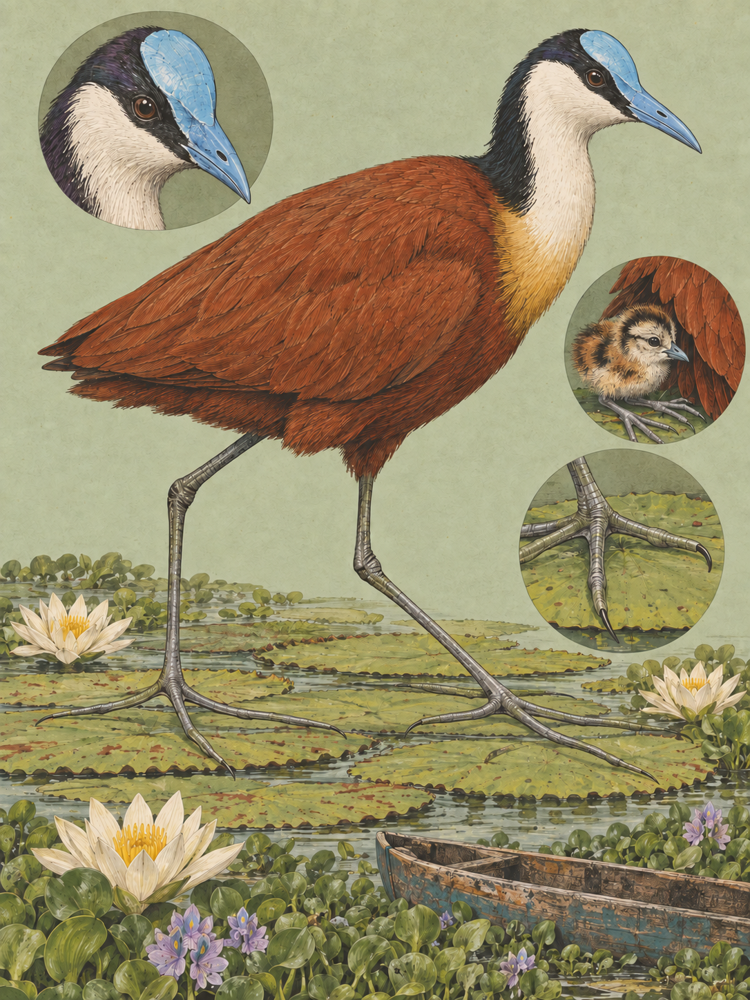

RIFT VALLEY
Actophilornis africanus
Swahili: „Sile-maua“. Afrikaans: „Grootlangtoon“.

Auf dem Wasser liegt am Morgen ein Teppich aus Blättern. Darüber läuft ein Vogel, und er läuft, als läge kein See darunter. Der Rücken kastanienbraun, die Kehle weiß, auf der Stirn ein blaues, fleischiges Schild, das ohne Naht in den kurzen blauen Schnabel übergeht. Im englischsprachigen Afrika heißt er „Jesus bird“. Der Spitzname kommt aus einer optischen Täuschung: Läuft der Vogel über untergetauchte Blätter, wirkt es, als wandle er auf dem Wasser.
Aus der Nähe löst sich das Bild in Einzelteile auf. Brust, Bauch und die ganze Oberseite sind satt kastanienbraun. Tiefschwarz sind die Flügelspitzen, der Hinterhals und ein durchgehender Augenstreif. Vorderhals und Kehle heben sich davon in reinem Weiß ab, und hinter Schnabel und Stirnschild sitzt ein kleiner Bereich violetter Federn. Die Beine sind grau. Jungvögel sehen anders aus: Ihre Unterseite ist weiß und nur von einem kastanienbraunen Bauchfleck unterbrochen, das blaue Schild ist noch nicht voll ausgeprägt. Vom Körper her ist das ein unscheinbares Tier, 23 bis 31 Zentimeter lang, so lang wie ein gewöhnliches Dreißig-Zentimeter-Lineal.
Der lateinische Name beschreibt nüchtern, was der Spitzname feiert. Actophilornis africanus setzt sich zusammen aus dem griechischen aktē für Flussufer oder Küste, philos für liebend und ornis für Vogel, dazu das lateinische africanus. Wörtlich also: der afrikanische flussuferliebende Vogel. John Latham beschrieb und zeichnete die Art 1785 in seiner General Synopsis of Birds, mit der denkbar groben Herkunftsangabe „Africa“. Johann Friedrich Gmelin lieferte 1789 die erste förmliche binominale Beschreibung und stellte den Vogel in die Gattung Parra. Claude Grant engte Gmelins sehr weit gefasste Typuslokalität 1915 auf Äthiopien ein. Die heutige Gattung Actophilornis führte Harry C. Oberholser 1925 ein.
Das Laufen über das Wasser ist Physik. Druck ist Gewichtskraft geteilt durch Kontaktfläche, und der Vogel vergrößert die Fläche so weit, dass der Druck die Oberflächenspannung nicht mehr durchbricht. Die Zehen werden bis zu sieben Zentimeter lang. Die Kralle der Hinterzehe steht auffallend gerade nach hinten und misst im Schnitt einundzwanzig Millimeter. Über diesen Radius verteilen sich die 137 Gramm eines Männchens oder die 261 Gramm eines Weibchens. Was ihn trägt, sind Seerosen (Nymphaea) und die Matten der Wasserhyazinthe (Eichhornia crassipes), deren Auftrieb er auf diese Weise gar nicht erst überwinden muss. Auch das Nest verlangt Genauigkeit: Am äthiopischen Lake Hawassa bevorzugen die Vögel Stellen mit einer Neigung von exakt null Grad, weil das die fragilen Schwimmnester stabil hält und die Eier nicht abrollen lässt.
Beim zweiten Hinsehen wird es merkwürdig. Weibchen wiegen im Durchschnitt das 1,68-Fache der Männchen, und die Kette dahinter ist vollständig dokumentiert. Die flachen Süßwasserseen der Tropen und Subtropen bieten in der Schwimmvegetation ein konstant hohes Angebot an wirbellosen Beutetieren. Ein Ei wiegt 17,5 Gramm, und bei diesem Angebot ist der Aufwand dafür gering. Ein Weibchen kann in rascher Folge mehrere Gelege produzieren. Bebrüten dagegen kann jedes Elternteil, denn der Embryo hängt nicht am Körper der Mutter. Damit wandert der Engpass. Was die Vermehrung begrenzt, sind nicht mehr Eier, sondern Brutpfleger, die 22 bis 28 Tage bebrüten und danach 40 bis 70 Tage Küken führen können.
Also kämpfen die Weibchen. Ein adultes Weibchen besetzt ein großes Revier und hält darin einen Harem aus durchschnittlich 2,4 Männchen, für die es nacheinander legt. Der Selektionsdruck läuft entsprechend auf Körpermasse und auf Waffen. Am Flügelbug sitzen Keratinsporne, die immer weiterwachsen und sich im Kampf abnutzen, bei Weibchen tendenziell stärker ausgeprägt. W. R. Tarboton dokumentierte das 1995 im Fachblatt Ostrich, Stephen T. Emlen und Peter H. Wrege verglichen es 2004 am südamerikanischen Gelbstirn-Blatthühnchen (Jacana jacana) mit Körpermasse und Spornlänge. Wogegen sich die Aggression richtet, ist umstritten. Die eine Lesart sieht klassische Revierverteidigung gegen Fressfeinde und Eindringlinge. Die andere stützt sich auf neuere Beobachtungen, nach denen die Wut der ansässigen Weibchen hochspezifisch fremden Weibchen gilt, die Reviere übernehmen und dabei Gelege und Küken töten, um die Männchen frei zu bekommen.
Das Männchen baut das schwimmende Nest allein. Es bebrütet vier Eier und sitzt an kühlen Tagen, im Mittel bei 22,9 Grad, zu 70,9 Prozent der Zeit darauf, unterbrochen von rund 35 kurzen Abwesenheiten am Tag, im Schnitt 8,4 Minuten lang. An heißen Tagen wärmt es die Eier oft weniger, als dass es ihnen Schatten spendet. Nach dem Schlupf, zwischen dem 22. und dem 28. Tag, räumt es sofort die Schalen aus dem Nest. Die Küken schwimmen und tauchen kurz danach, bleiben aber 40 bis 70 Tage von der Führung und dem Schutz des Vaters abhängig. Droht Gefahr, etwa ein Krokodil, der Schatten eines Greifvogels oder steigendes Wasser, klemmt er sie sich unter die Flügel und trägt sie fort. Von außen hängen dann oft nur noch die langen Kükenbeine aus seinem Brustgefieder.
Den Tag über sucht er die Blattoberflächen ab, langsam, überwiegend mit den Augen, Schritt und Pick. Er frisst Fleisch: Insekten wie Käfer, Fliegen und Libellen, dazu Wasserwürmer, Spinnen, Krebstiere und Schnecken, selten auch geringe Mengen Samen. Dokumentiert ist, dass Blatthühnchen gelegentlich auf dem Rücken von Flusspferden (Hippopotamus amphibius) oder Kaffernbüffeln (Syncerus caffer) landen, die im Wasser stehen, und ihnen Insekten und Wirbellose von der Haut lesen. Weg zieht er nicht. Er ist Standvogel und weicht nur nomadisch aus, wenn eine Wasserstelle austrocknet. Ende September und Anfang Oktober läuft die ostafrikanische Brutzeit aus, die von Juni bis Oktober dauert. Vermutlich trifft man dann vor allem Männchen mit halbwüchsigen Küken aus Juli und August.
Der Teppich, über den er läuft, ist vielerorts nicht mehr der alte. Die Wasserhyazinthe kam im 20. Jahrhundert aus Südamerika ins Rift Valley und bildet dichte, geschlossene Decken. Das Blaustirn-Blatthühnchen hat sich an sie angepasst und nutzt die Matten als Lauf- und Nistgrund. Was von Weitem aussieht wie ein Gang übers Wasser, ist heute oft ein Gang über eine eingeschleppte Pflanze.
Wirtschaftlich nutzt ihn niemand. Für Nahrung, Medizin oder Handel ist der Vogel zu klein und zu spezialisiert. Sein Verhältnis zu den Menschen im Rift Valley läuft über das Wasser, in dem beide stehen. Am Lake Naivasha sitzt die Schnittblumenindustrie. Pestizide und Dünger werden in den See ausgewaschen, und die chemische Belastung berührt die Nahrungsketten, auf die das Blatthühnchen angewiesen ist. Dazu kam im 20. Jahrhundert die Einfuhr fremder Arten, neben der Wasserhyazinthe der Rote Amerikanische Sumpfkrebs (Procambarus clarkii). Am Lake Nakuru fehlt im alkalischen Hauptbecken jede geeignete Schwimmvegetation. Die Art weicht auf die Süßwasserzuflüsse aus und auf Anlagen, die niemand für den Naturschutz gebaut hat: Zählungen belegen sie an den Nakuru Town Sewage Works und an den Njoro Sewage Ponds, wo nährstoffreiches Wasser dichten Pflanzen- und Insektenwuchs trägt. In der heutigen Ökologie gilt sie als Indikatorart. Wo sie steht, ist das Feuchtgebiet intakt, das Wasser gut und die Insektenwelt funktionsfähig. Global steht es gut um sie. Die IUCN führte sie 2016 als nicht gefährdet, bei rund einer Million Individuen und stabilem Trend. Legenden, Riten oder Sprichwörter kenianischer Gruppen zu dieser Art sind in den Quellen nicht dokumentiert.
Wo und wann: Die dichten Teppiche aus Wasserhyazinthen und Seerosen am Lake Baringo und am Lake Naivasha sind die aussichtsreichsten Kernhabitate. Am Lake Nakuru die Ränder und Süßwassereinläufe absuchen, etwa die Mündung des Njoro River, nicht die offene alkalische Fläche. Hell's Gate lohnt kaum. Zeit ist das frühe Morgenlicht oder der späte Nachmittag, sonst spiegeln die nassen Blätter zu hart. Abwarten lohnt das langsame Absuchen der Blattflächen, die Drohgebärde eines Weibchens mit nach vorn gereckten Flügeln und, Ende September bis Anfang Oktober, der Transportgriff der Männchen. Annäherung langsam und geräuschlos vom Wasser aus im Kanu. Motorboote sind der häufigste Fehler.
Brennweite: 150 bis 600 als Hauptwerkzeug, denn der Vogel ist klein und agiert flach auf dem Wasser. 100 bis 400 für den Vogel im Lebensraum, wenn die überlangen Zehen im Verhältnis zu den Blättern zu sehen sein sollen. 26 bis 60 und 45 mm taugen nicht für die Art, wohl aber für die Hyazinthenteppiche des Lake Naivasha.
Bild-Idee: Ein Männchen mit Küken unter den Flügeln, aus dem Brustgefieder hängen nur die langen Beine. Für die Futtersuche reicht 1/500 s, für Sprints über das Wasser und für den Flug sind 1/1250 bis 1/2000 s nötig.